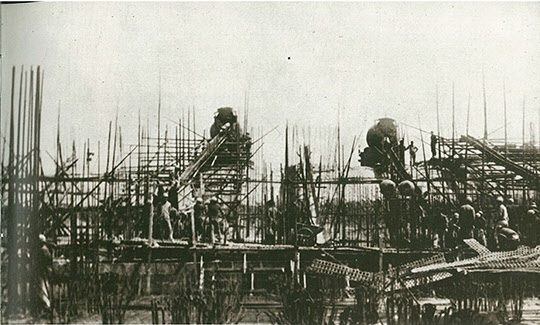
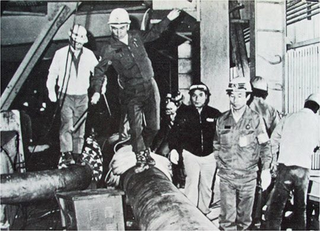
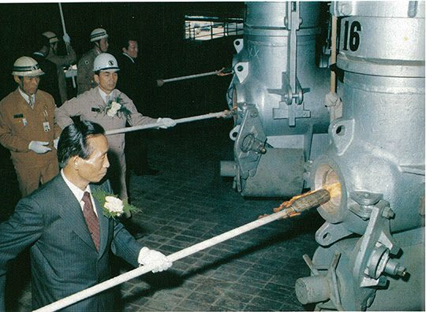

보도일 2015-02-03출처 조선일보 프리미엄조선 연재
“명령은 5%고 확인과 감독이 95%다.” 군대 지휘관 박정희의 원칙이었다. 포항제철 건설 현장의 박태준에게 그것은 강철 같은 원칙으로 끊임없이 작동하고 있었다.
1972년 봄날의 나른한 한낮. 박태준은 제강공장 건설현장에 차를 세웠다. 기초공사가 마무리 단계에 접어들고 있었다. 종합제철소 모든 공장의 기초공사가 다 그렇지만, 특히 수백 톤의 설비를 천장에 매달아 움직이게 하는 제강공장은 기초공사에서 강철 파일을 두들겨 땅속으로 박는 작업부터 제대로 해야 후환을 막을 수 있다.
파일 박기의 작업 순서는 간단했다. 먼저 지하 20∼50미터에 분포한 암반에 닿기까지 파일을 하나씩 두들겨 박는다. 암반 깊이가 파일 하나의 길이보다 더 깊은 경우엔 다른 파일을 용접으로 잇대어야 한다. 빽빽하게 들어선 파일들의 길이는 땅속의 암반 위치에 따라 들쭉날쭉할 수밖에 없어서, 지상에 남은 부분은 일정 길이만 남기고 자투리를 잘라낸다. 그렇게 키를 통일시키고 나서 파일 속으로 콘크리트를 쏟아 붓는다.
만약 제대로 박히지 않은 파일이 있으면, 다시 말해 ‘부실공사’가 있으면 박힌 파일이 쏟아져 들어오는 콘크리트 무게부터 견디지 못해서 저절로 기울어지게 된다.

제강공장 기초공사에서 파일에 콘크리트를 먹이는 날, 그것이 포스코의 미래를 위한 무슨 천우신조였는지 몰라도, 마침 박태준이 지휘봉을 들고 높다란 구조물 위에서 그 작업을 지켜봤다. 그런데 묘한 현상이 벌어졌다. 레미콘트럭의 콘크리트를 받아먹은 강철 파일들이 슬며시 한쪽으로 기울어지지 않는가. 순간, 그의 동공에 불꽃이 튀었다.
박태준은 즉각 공사를 중단시키고 불도저를 불러오게 했다. 다른 현장에 있던 중장비가 꾸물꾸물 달려오는 사이, 어느덧 비상이 걸려 간부들이 모여들었다.
“밀어봐.”
불도저가 비스듬히 기운 파일을 건드리자 맥없이 쓰러졌다. 옆의 똑바로 서 있는 파일도 건드려봤다. 역시 맥없이 쓰러졌다. 더욱 경악할 노릇은, 지상에 남은 파일들의 길이를 맞추느라 잘라낸 자투리 파일을 그대로 모래밭에다 나무토막처럼 꽂아둔 것도 있었다. 있을 수 없는, 도저히 있어서는 안 되는 장면에서 박태준은 또 다시 인격을 헌 옷처럼 벗어던져야 했다.
“책임자 나왓!”
책임자는 일본 설비회사의 하청을 받은 한국 건설회사 소장이었다. 박태준은 지휘봉으로 그의 안전모를 내리쳤다. 단번에 지휘봉이 두 토막 났다. 나무로 된 연결 부위가 부러진 것이다.
“이 새끼 이거, 너는 민족 반역자야. 조상의 혈세로 짓는 공장에서, 야 이 새끼야, 저게 파일로 보이나? 저건 담배꽁초야, 담배꽁초! 천장의 전로에서 쇳물이 엎질러지면 밑에서 일하는 동료가 타죽거나 치명적 화상을 입는 거야. 그래서 부실공사는 곧 적대행위야!”
비서가 건네준 두 번째 지휘봉이 부실공사 책임자의 안전모 위에서 또 부러졌다. 그가 꿇어앉았다.
“여기, 일본 회사 책임자 찾아와!”
최종 책임자는 일본 설비회사의 현장감독이었다. 그가 하청회사의 시공에 대한 감독을 맡도록 계약돼 있었다. 일단 소낙비는 피하려 했던 일본인 감독이 포철 사장 앞에 죄인처럼 불려나왔다. 박태준은 일본말로 사정없이 퍼부었다.
“이 나쁜 놈아, 너희 나라 공사도 이런 식으로 감독하나! 우리가 어떤 각오로 이 제철소를 짓고 있는지 몰라! 이 나쁜 놈아!”
박태준의 세 번째 지휘봉이 일본인 감독의 안전모를 후려쳤다. 이번에도 그것은 단번에 부러졌고, 얻어맞은 사람이 그 충격에 무너지듯 그대로 털썩 꿇어앉았다.
“정말 잘못했습니다.”
큰 과오를 솔직히 인정하고 사죄하는 일본인 남성 특유의 자세와 목소리였다.
비로소 박태준의 분노는 한풀 꺾였다. 현장엔 잠시 바람이 죽어 있었다. 말소리도 숨소리도 덩달아 죽어 있었다. 이제 곧 바람과 함께 말소리와 숨소리가 살아나면, 제강공장의 ‘꽁초파일 사건’은 바람을 타고 아주 빠르게 모든 현장으로 빠짐없이 번져나갈 것이었다. ‘사장님은 전쟁터의 정말 무서운 소대장’이란 소문도 한 번 더 퍼질 것이었다.
“현장에서 나는 사장이 아니라 전쟁터 소대장이다. 전쟁터 소대장에겐 인격이 없다.”
박태준은 평소 그렇게 강조하고 있었다. 부실공사를 막고 안전제일의 생활화를 위해 현장에선 자신의 인격을 버리겠다는 선언이었다. 욕설도 하고 지휘봉도 쓰고 때로는 발까지 나간다는 선언이었다. 1970년대 한국의 건설업 수준에서 지휘자가 고매한 인격에 매달린다면, 자신의 인격을 지키는 대신 국가대업을 망칠 수밖에 없다. 이 판단과 확신을 그는 명백히 하고 있었다.
1972년 6월 어느 날, 박태준은 기초공사에서 큰 말썽을 일으켰던 제강공장 현장을 찾았다. 한창 철구조물 공사가 진행되고 있었다. 솔선수범이 몸에 익은 그는 90미터 높이의 제강공장 지붕으로 올라갔다. 주먹만 한 대형볼트로 육중한 철구조물을 연결하는 작업에는 볼트를 확실히 조이는 일이 가장 중요하다. 그게 안 되면 대형사고의 씨앗을 뿌리는 격이다.
수백 톤씩 나가는 장비들의 수많은 반복운동을 견디지 못한 철구조물이 예고도 없이 갑자기 무너져 내릴 수 있기 때문이다. 그래서 대형볼트는 작업자의 눈으로 조임 상태를 확인할 수 있도록 돼 있다. 제대로 조여진 것은 말끔하고, 허술히 조여졌거나 오차가 생긴 것은 지저분하다.
박태준이 허공에서 걸음을 멈췄다. 철구조물에 박힌 볼트가 지저분해 보였다. 자세히 살펴보니 한두 군데가 아니었다. 그는 아찔했다. 자신의 몸이 까마득한 땅바닥으로 추락하는 것 같았다. 시찰을 중단하고 사무실로 돌아와 간부들을 집합시켜 불호령을 내렸다.
“지금 즉시 모든 볼트를 하나도 남김없이 일일이 확인하라! 잘못 조인 볼트는 머리에 흰 분필로 표시하라! 서울사무소에 연락해서 시공회사의 책임자를 즉각 현장으로 내려오게 하라!”

무려 24만 개 대형볼트 중 약 400개에 흰 분필이 칠해졌다. 그것들은 모조리 교체되었다. 미래의 어느 순간에 일어날 수 있는 붕괴사고를 미리 예방한 일이었다. 직원들 사이에 ‘섬뜩할 만큼 예리한 육감을 지닌 사람’, ‘남의 눈엔 멀쩡해 보이는 것에서 문제점을 발견하는 비정상의 눈을 지닌 사람’으로 불리게 되는 박태준. 그의 대단히 특별한 감각은, 부실공사를 추방하여 포철의 미래에 느닷없이 덤벼들 큰 우환을 막아내는 예방주사 같았다.
박태준은 외국 출장이 없는 날에는 거의 매일 포항에 머물면서 하루에 서너 시간쯤 눈을 붙이고 이른 아침부터 회사로 나가 건설회의를 주재하고 틈만 나면 현장을 순시하며 모든 공장의 구석구석을 살펴봤다. 그렇게 현장제일주의와 완벽주의를 추구하는 박태준과 포항제철을 격려하기 위해 박정희도 애정과 관심을 아끼지 않았다. 1968년 11월 첫 방문 후 1972년 11월까지 공식적인 기록만 봐도 일곱 차례나 포철을 다녀간 것이다.
